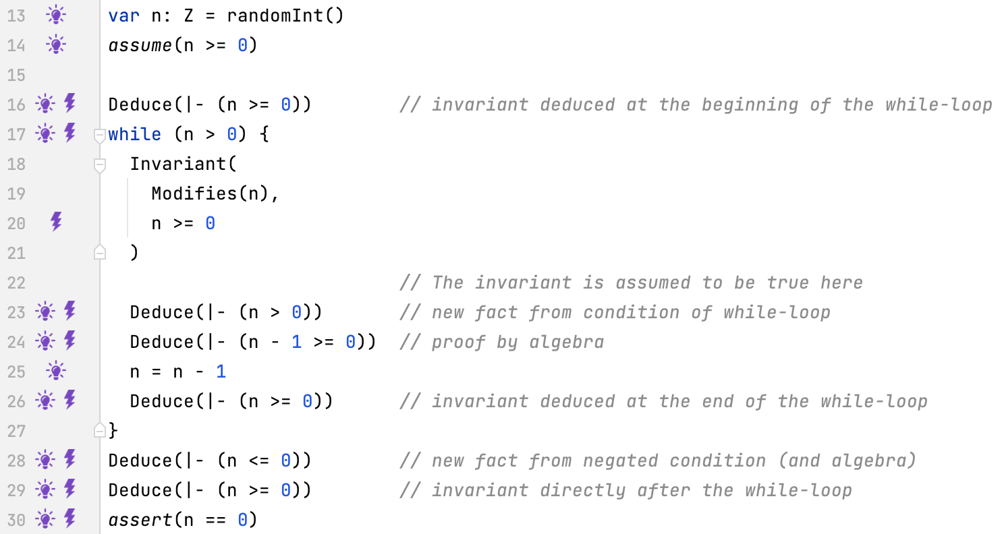
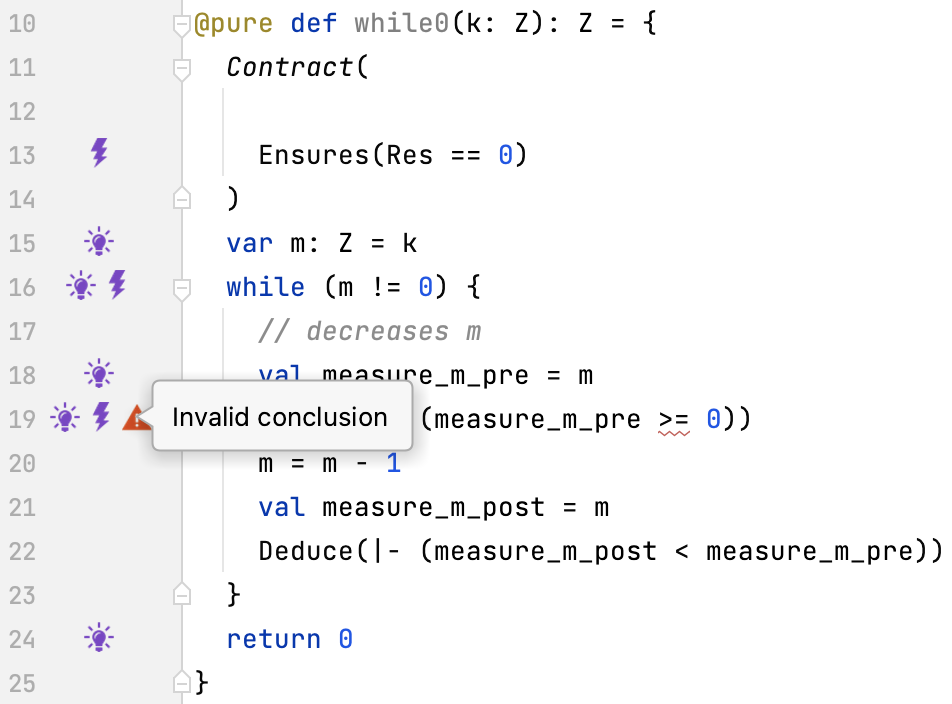
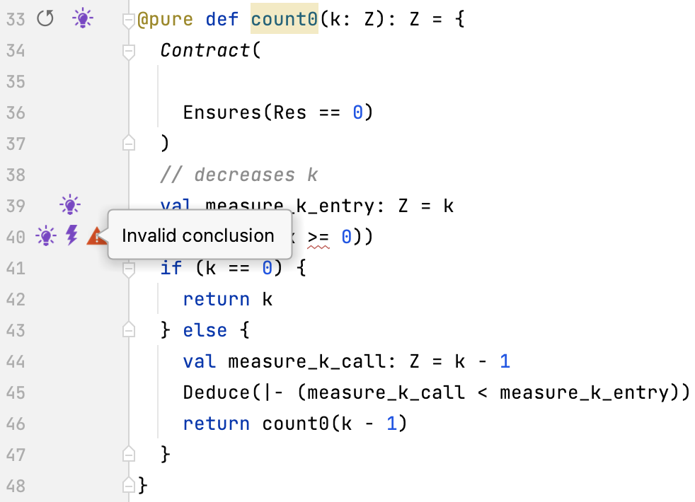

Lecture Summary: Loops
Repetition
The Natural Numbers (A Refresher on Induction)
Counting is a repetitive task. We count:
0, 1, 2, 3, 4, 5, ...
It is not possible enumerate all numbers (because there are infinitely many of them).
Instead, we use rules to describe the entirety of natural numbers.
Finitely many rules are sufficient to describe infinitely many objects.
Define,
-
0is a natural number - If
nis a natural number, then the successorn'is a natural number - For any predicate Φ, if
- Φ is true, and
- Φ is true implies Φ(
n') is true, for any natural numbern, then Φ(n) is true for all natural numbersn.
The natural numbers are defined by induction,
starting from 0, specifying successors (a, b).
To prove properties Φ about natural numbers we use complete induction (c)
Addition of Natural Numbers (A Refresher on Recursion)
Knowing the rule how to enumerate natural numbers, we could enumerate their sums
0 + 0 = 0, 1 + 0 = 1, 2 + 0 = 2, ......
A better way to describe addition is to exploit the inductive definition of natural numbers.
We define “+” recursively 0 + x = x n' + x = (n + x)'
where n' is the successor of n.
Using the recursive definition, we can calculate
3 + 1 = (2 + 1)' = (1 + 1)'' = (0 + 1)''' = 1''' = 4
To prove properties about “+” we use complete induction.
Claim: m + n ≥ m
Proof by induction on m.
Base case (x = 0): 0 + n = n ≥ 0
because all natural numbers are at least 0.
Inductive step:
Assume induction hypothesis m + n ≥ m,
hence m' + n = (m + n)' ≥ m'
because x ≥ y implies x' ≥ y' and induction hypothesis.
End of proof
Addition of Natural Numbers (A Refresher on Iteration)
Instead of recursion we can use iteration to add two natural numbers m and n.
k = n
i = m
while i > 0
k = k + 1
i = i - 1
where k contains the sum of m and n when the program terminates.
Calculation of a sum is not as straightforward as in the recursive case.
It’s not immediately clear how we could prove m + n = k ≥ m
In general, iteration is more intricate.
The reasoning about iteration is complicated by the use of mutable variables. However, without mutable variables iteration is not useful!
We prefer recursion for specification – it is easy to comprehend. Often iteration (and mutable variables) are more efficient. So, we prefer to use it for implementation.
Addition of Natural Numbers (A Refresher on Tail Recursion)
Any iteration, such as,
k = n
i = m
while i > 0
k = k + 1
i = i - 1
can be written as a tail-recursive program (where the recursive call always comes last)
(k, i) = *add*(k, i) where
*add*(k, i) =
if i > 0
*add*(k + 1, i - 1)
else
(k, i)
Note that, the call to add comes after k + 1 and i - 1.
Therefore, add is tail recursive.
Tail-recursive functions and the corresponding iterative programs are essentially the same.
As a consequence, we can use induction to reason about iteration as well.
But we do not need to take a detour via a tail-recursive function.
We can do it directly using (inductive) invariants.
Counting Down by Iteration
Example: Iteratively Counting Down to Zero
The following program counts down to zero.
|
|
Let’s see what we know to be true at different locations in the program.
By reasoning about the program we want to establish that the assertion n == 0 holds at the end of the program.
Tracing Facts by Looking Forward
At the beginning of the loop body the loop condition must be true.
|
|
This fact must be true because the loop condition has just been evaluated to true when the loop body is entered.
After the loop the negation of the loop condition must be true.
|
|
This fact must be true because the loop condition has just been evaluated to false when the loop is exited.
From the assumption we can also determine that n >= 0 must be true before the loop.
|
|
We know this because of the assumption we make. That’s all we can deduce forward. Let’s consider what we can find out “looking back” from the assertion.
Tracing Facts by Looking Backward
We need to show that n == 0.
|
|
We already know that n <= 0 after the loop.
If we knew also that n >= 0 we could deduce n == 0
Let’s add a conjecture n >= 0
We only conjecture that n >= 0! should be true, but we don’t know this yet.
|
|
If the loop was never entered, then it would be true because n >= 0 is true before the loop (by assumption).
If the loop was entered, n >= 0 would have to be true at the end of the body just before the loop could be exited.
We only conjecture that n >= 0 should be true, but we don’t know this yet.
|
|
If the loop was never entered, then it would be true because n >= 0 is true before the loop (by assumption).
If the loop was entered, n >= 0 would have to be true at the end of the body just before the loop could be exited.
We conjecture that n >= 0 should be true at the end of the body.
|
|
Continuing backwards, let’s have a look at the assignment n = n - 1.
If n >= 0 was true after the assignment, then n - 1 >= 0 would have to have been true before the assignment.
Where n - 1 >= 0 is n >= 0 with n replaced by n - 1.
Where n - 1 >= 0 is n >= 0 with n replaced by n - 1.
The fact n - 1 >= 0 obtains n >= 0 pretending the assignment never took place.
Now, n - 1 >= 0 is equivalent to n > 0 by algebra.
Hence, it’s true and all conjectures are proved.
Tracing Facts by Looking Forward (Again)
We now have the following program with all currently known facts.
|
|
These facts are sufficient to show that the assertion is true.
Having all these facts, there is one more fact that we can deduce forward now.
We know that n > 0 is true before the loop and at the end of the loop body.
Thus, it must be true at the beginning of the loop body.
Tracing Facts Summary
Now we have:
|
|
In fact, we are allowed to assume that the fact n >= 0 at the beginning of the loop.
Together with the loop condition n > 0 it forms the inductive hypothesis for the loop.
The fact n >= 0 is central for the proof.
It is called an (inductive) invariant for the loop.
We mention it explicitly.
|
|
We also document which variables change in the loop body by way of a frame. This describes which variables may be modified, supporting understanding. And it describes which variables are renamed in the loop.
Finally, we have all information needed for reasoning about the loop.
|
|
Recall how we have used a combination of forward and backward reasoning to reduce the gap between what we know and what we have to prove. Now we can describe a rule for proving while-loops correct.
Invariant Rule for Proving Loops Correct
The following program counts down to zero.
|
|
We have to prove that the invariant I is true before the loop and at the end of the loop body.
The modifies clause must specify at least those variables modified in the body.
It describes what is allowed to change.
Remark. Candidates for invariants can often be found by reasoning backwards.
Example: Iteratively Counting Down to Zero in Logika
 The invariant is specified by.
|
|
Termination
Termination
In this course we mostly focus on reasoning about facts we can deduce should a program terminate This is called partial correctness.
In addition to the above, we can prove that a program terminates. This is called total correctness
Let’s have a brief look at termination. We return to it later in the course.
Termination of a Loop
Let’s encapsulate the iterative counting-down program in a function
|
|
We can prove about this function that, should the loop terminate, then it returns 0.
What happens if the function is called with the argument -3, that is, while0(-3) ?
Measuring Termination of a Loop
If we could show that the always terminates, we would be certain the function returns 0.
|
|
If no progress can be observed the program might not terminate
To observe progress we define measure
The measure must decrease during each loop iteration and not cross a given minimum (just like the progress bar)
This guarantees termination
Let’s introduce a measure for the loop
We need a method for verifying progress, like observing a progress bar.
Observed progress: [insert progress bar] while0(10) returns 0.
A Measure for the Iterative Count-Down Function
The loop decreases m in each iteration, so m appears a good measure.
|
|
We have to prove that m decreases, but not beyond a given minimum, say, 0.
Let’s introduce auxiliary variable for the observation.
|
|
Variable measure_m_pre observes the measure at the beginning of the loop body.
Variable measure_m_post observes the measure at the end of the loop body.
We can deduce that the measure decreases.
|
|
The fact measure_m_post < measure_m_pre is true at the end of the loop body.
We cannot deduce that the measure does not cross the minimum 0.
|
|

Having instrumented the program with the measure, we can use Logika for proof support.
In fact, we do not know whether m >= 0 when the loop is first entered.
A pre-condition can constrain k such that m is at least 0.
|
|
A Recursive Count-Down Function
Similarly, to iteratively counting down, we can count down recursively.
|
|
We need a measure on a function parameters that is bounded below when the function is entered and decreased at each recursive call.
A Measure for the Recursive Count-Down Function
Parameter k seems like a good candidate for a measure (It’s the only candidate, of course).
|
|
Let’s introduce two auxiliary variables measure_k_entry and `measure_k_call to observe progress.
The function instrumented for observation of the measure:
|
|
Variable measure_k_entry observes the measure when the function is entered.
Variable measure_k_call observes the measure in the recursive call.
We can deduce that the measure is deceased at the recursive call.
|
|
Indeed, we have measure_k_call < measure_k_entry.
We cannot deduce that the measure is bounded below by 0.
|
|

When the function is entered, there is no guarantee that k would be at least0.
As in the case of the iterative version, this can be achieve by means of a pre-condition.
With the precondition added, the termination proof succeeds.
|
|
The Factorial Function
The Factorial Function
Next we consider a more complete example.
We begin with a (mathematical) specification of the factorial function. Subsequently, we provide a recursive implementation (that is easy to understand). Finally, we implement an iterative version of the factorial function and prove that it is correct with respect to the recursive implementation and thus with respect to the (mathematical) specification.
This approach permits us to move from a description of a program that is easy to understand to one that is efficient to execute. Often, the first recursive implementation is composed of a number of mathematical specifications and because of it’s simplicity we consider the recursive implementation a specification itself.
What we consider a specification is a matter of perspective.
Mathematical Specification of the Factorial
The factorial of a natural number n is usually specified based on their inductive definition.
|
|
The definition is recursive matching the inductive definition of the natural numbers.
The base case (n == 0) returns an expression.
The inductive case (n > 0) contains the recursive call (with n - 1).
Remark. We use the type of integer numbers for simplicity.
Aside.
The attribute @strictpure limits the constructs that can be used in a function.
We use it to obtain “mathematical” definitions.
The Scala expression.
|
|
matches expression e with the first possible pi and returns the corresponding ri.
Induction Rules the Factorial
We formulate inductive rules for proving properties about the factorial.
|
|
Using the recursive definition of fac_rec_spec and the inductive numbers these are straightforward to derive.
Logika “knows” these rules.
Recursive Implementation of the Factorial
Following the mathematical definition very closely, we implement the factorial recursively.
|
|
Because the implementation is so close to the mathematical definition, Logika can prove it without further information.
Specifications should be as “obvious” as possible.
Let’s implement fac_rec iteratively.
Iterative Implementation of the Factorial
The iterative implementation fac_rec(see post-condition).
|
|
Recursive Implementation of the Factorial
We have proved:
|
|
that is, given n >= 0, the recursive specification and the iterative implementation are inter-replaceable.
We have implemented the factorial function correctly.
Exercise 1
Prove that fac_rec terminates.
Prove that fac_it terminates.
The Fibonacci Function
Mathematical Specification of the Fibonacci Number
The fibonacci number for n is specified as follows.
|
|
Exercise 2
- State the inductive rules for
fib_rec_spec(There are three of them!) - Implement the recursive function
fib_reccomputing the fibonacci number - Prove that
fib_recterminates using Logika
Exercise 3
|
|
- Complete the implementation of the iterative version
fib_it - Do not introduce any additional variable
- Hint: Look at the previous example of in-place number swapping
- Prove your implementation correct using Logika
- Prove that your implementation terminates using Logika
Slang Examples
Count Int Loop Rec
|
|
Count Int Loop Rec Term
|
|
Fac Function Loop Rec
|
|
Fac Function Loop Rec Term
|
|
Fib Function Loop Rec
|
|
Mult Add
|
|
Summary
- We have reviewed induction, recursion and iteration
- We have inductively reasoned about while-loops
- We have inductively reasoned about recursive functions
- We have considered termination verification for loops and recursive functions
- We have learned about a method to develop programs from specifications